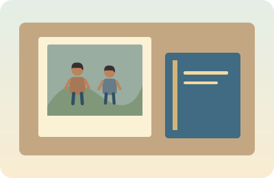

कथा और अनुभव का वर्णन
Narrative & storytelling · Use it in conversation
Device Hindi voice required; not a native recording.
बातचीत
Listen and roleplayAयात्रा कैसी रही?yaatra kaisee raheeHow was the journey?
Bशुरू में रास्ता नहीं मिला।shuroo mein raasta nahin milaAt first I couldn't find the way.
Aफिर क्या हुआ?phir kya huaWhat happened next?
Bएक व्यक्ति ने मदद की और हम पहुँच गए।ek vyakti ne madad kee aur ham pahunch gayeSomeone helped and we arrived.
समझ जाँचें
Check understandingWhich word marks an unexpected event?
अचानक.
Which reply follows the first line of this model dialogue?
Answer
शुरू में रास्ता नहीं मिला।
स्वतंत्र अभ्यास
Transfer to a new situationRead both roles. Then cover the English, take role B and respond aloud. Change the details for a new conversation.
Tell a fictional 150-word travel story with a beginning, turning point and ending.
0 शब्द
Use fictional or non-sensitive details. No server submission or automatic scoring.Worksheet
Completion is self-marked and stored locally.